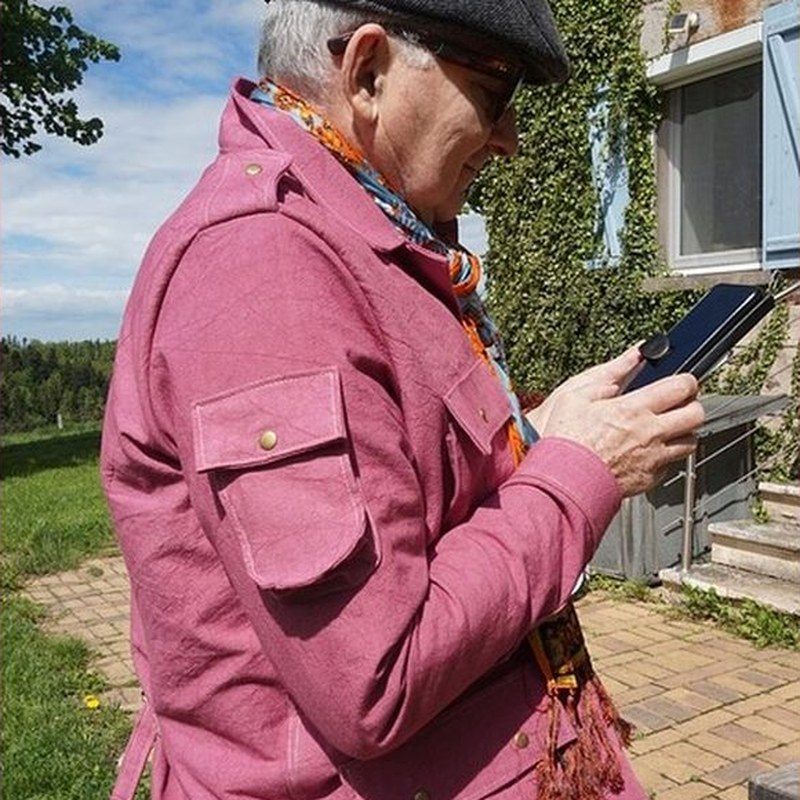

Deux modèles de saharienne, tous deux sur mesure. Du plus simple au plus élaboré.

Une seule épaisseur : la plus rapide à coudre.
Difficulté●●●○
Créer une saharienne simple
Pièce d’épaule, doublure et entoilage, pour une veste de mi-saison.
Difficulté●●●●
Créer une saharienne doublée